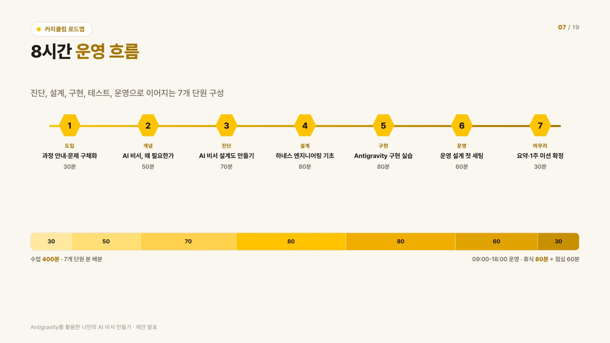
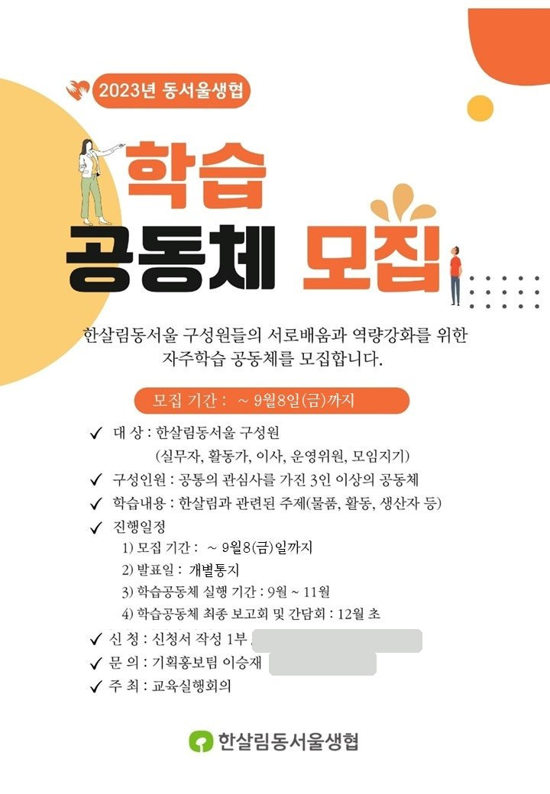
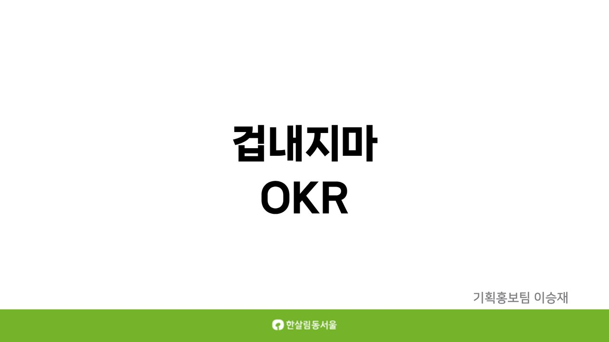
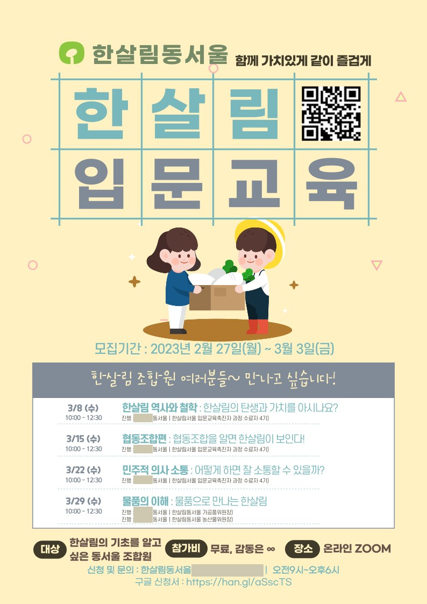
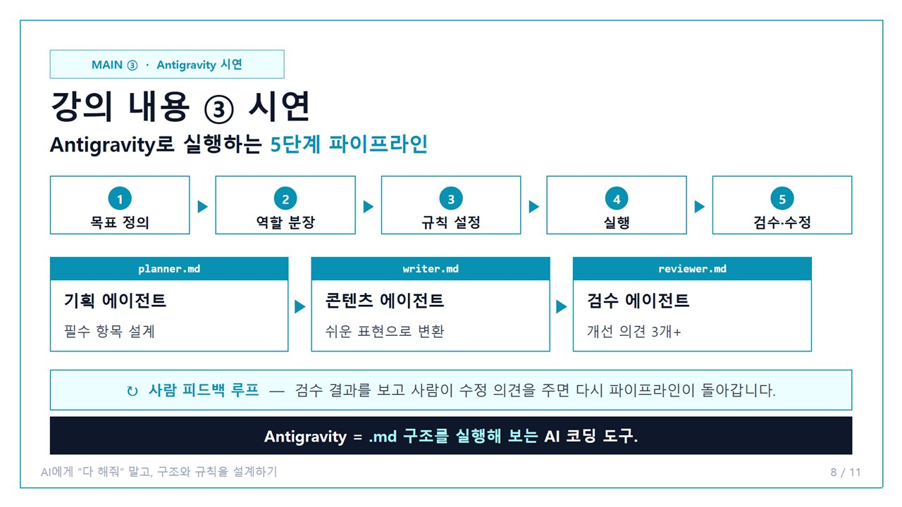
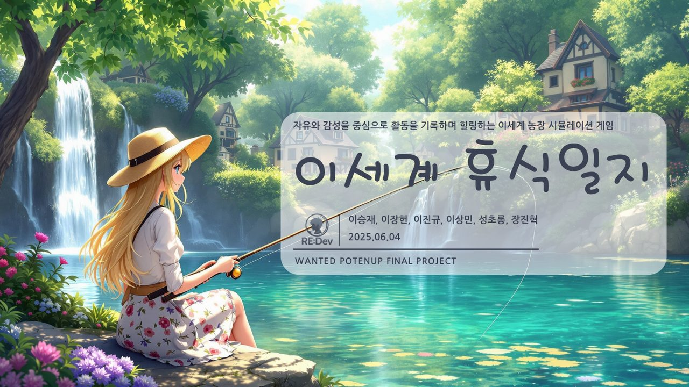

요구분석과 판단
현장 요구를
현장 요구를
실행 가능한 구조로 바꾸는
- 문제 정의
- 반복 업무와 흩어진 기록에서 필요한 정보·절차를 먼저 정리합니다.
- 설계 판단
- 필요한 단계와 입력을 남기고, 불필요한 항목은 덜어냅니다.
적용 사례 CRM의 고객 흐름 설계, 학습모임의 신청·정산 체계.
한살림에서 입문교육·학습모임·법정의무교육을 맡았고, 지금은 교육·컨설팅사 인턴으로 컨퍼런스와 AX 교육 현장을 겪고 있습니다. 반복되는 일은 AI에 맡기고, 아낀 시간을 사람을 가르치는 데 씁니다.

이승재
AI 교육기획·운영 / HRDHRD 업무 약 2년을 포함한 총 경력 3년 11개월현재 엑스퍼트컨설팅 인턴 재직 중
현장 요구의 구조화, 사람과의 조율, 검수와 인수인계. 각 기준을 실제로 적용한 사례를 연결했습니다.
적용 사례 CRM의 고객 흐름 설계, 학습모임의 신청·정산 체계.
적용 사례 OKR 도입 설명·설득, 내부 강사진과 입문교육 준비·리허설.
적용 사례 강의장별 폰트·화면비 준비, 검수 스킬 결과의 최종 확인.
대표 사례 세 건을 먼저 넘겨 보고, 아래에서 전체 프로젝트를 확인할 수 있습니다.


CRM 요구·화면 설계 → 검수 자동화 → 현장 검수·인수인계 순으로 소개합니다.
 영업 CRM 프로토타입고객사 CRM 서비스 제안용 프로토타입 · 요구 정의·화면 결정·검수요구 정의 → 화면 결정 → 구현 → 검수5단계 흐름개선 과제 23건약 4주
2026.09
브로셔 검수 스킬반복 검수를 AI 스킬로 · 실무 13건 사용시안 확인 → 오류 선별 → 수정사항 PPT검수 PPT 13건원본 무수정
2026.08
강의장별 USB 패키지현장 환경에 맞춘 자료 구성·검수·인수인계자료 취합 → 폰트·화면비 구성 → 검수 → 인수인계강의장 5곳786장 통합검수·인수인계
2026.08 ~ 09
영업 CRM 프로토타입고객사 CRM 서비스 제안용 프로토타입 · 요구 정의·화면 결정·검수요구 정의 → 화면 결정 → 구현 → 검수5단계 흐름개선 과제 23건약 4주
2026.09
브로셔 검수 스킬반복 검수를 AI 스킬로 · 실무 13건 사용시안 확인 → 오류 선별 → 수정사항 PPT검수 PPT 13건원본 무수정
2026.08
강의장별 USB 패키지현장 환경에 맞춘 자료 구성·검수·인수인계자료 취합 → 폰트·화면비 구성 → 검수 → 인수인계강의장 5곳786장 통합검수·인수인계
2026.08 ~ 09
구성원의 수요를 운영 제도로 바꾸고, 내부 강사진과 협업하고, 생소한 제도의 도입을 설명·조율한 경험입니다.

내부 학습모임 시스템제도 설계 · 직접 기획·제작수요조사 → 신청·운영 → 활동비 정산만족도 4.86 / 5.0 (참가자 평가)4개 모임정산 체계 한살림
OKR 도입 기획조직문화 · 변화관리 · 직접 기획·제작설명자료 제작 → 1:1 설득 → 도입 공감대21장 자료8명 TFT 한살림
온라인 입문교육교육 기획·운영 · 직접 기획·제작자체 교육으로 전환 → 강사진 리허설 → 온라인 운영만족도 4.28 / 5.0 (참가자 평가)2회 40명리허설 8~12회 한살림8시간 과정은 기획·제작 프로젝트이며, 15분 강의는 직접 시연·진행한 경험입니다.

하네스 엔지니어링 기반 AI 업무 구조화 강의15분 마이크로러닝 · 직접 설계·진행기획 → 콘텐츠 → 검수 → 사람 피드백에이전트 3종라이브 시연 2026.05.14AI·언리얼 개발자와 함께 게임 기획·사용자 흐름·일정·QA를 총괄한 융합 프로젝트입니다.

이세계 휴식일지힐링 농장 게임 · 6인 융합팀 총괄 PM기획 → 일정 관리 → QA6인 팀 총괄 PM기획·UI·일정·QA융합 우수상 2025.04 ~ 06총 경력 3년 11개월 · 인턴 재직 중
학습 범위 및 역할
채용·평가·보상·교육·조직에 생성형 AI를 적용하는 실무 과정을 수료하고, AI 에이전트·RAG 챗봇·업무 자동화·교육 콘텐츠 제작을 실습했습니다. 수료 과제로 KHIDI 신입 입문교육 제안과 AI 비서 8시간 과정을 설계했습니다.
AI 서비스 기획, 데이터 수집·NLP 분석, 생성형 AI 콘텐츠 제작을 프로젝트 기반으로 학습하고 이세계 휴식일지·T래블·BaristAI 3개 프로젝트를 수행했습니다.
각 툴을 실제 프로젝트에서 어떻게 활용했는지 함께 정리했습니다.
교육 콘텐츠 기획·제작 및 업무 생산성 도구 활용
코드 작성 및 자동화·웹 제작 및 배포
시각자료 제작 및 교육 운영·협업 관리
교육·운영 현장에서 배운 요구분석과 소통을, AI로 반복 업무를 덜어내는 일로 연결해 온 과정입니다.
반복 업무를 정리하고, 함께 쓸 사람과 조율하며, 검수와 인수인계까지 연결할 기획자가 필요하다면 이야기 나누고 싶습니다.
CRM 기획과 업무 자동화를 중심으로, 현장 요구를 정리하고 사용할 수 있는 구조로 만드는 일에 함께하고 싶습니다.